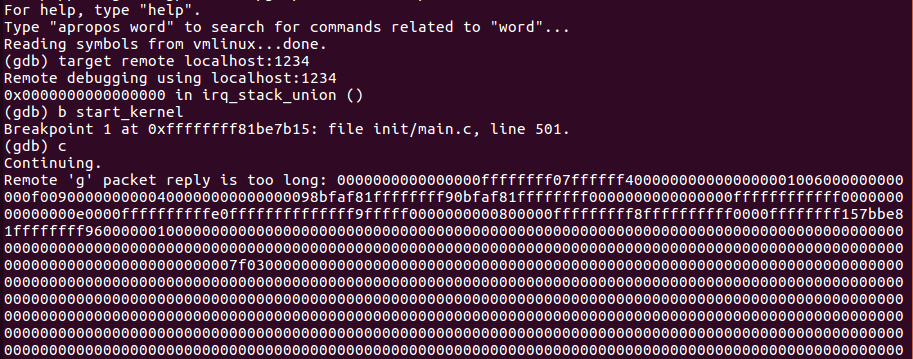
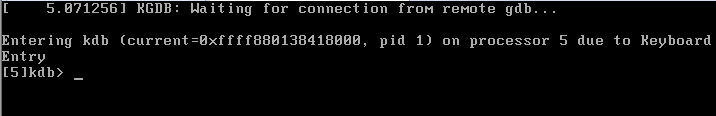

linux内核调试环境搭建
内核下载
首先因为我们要调试内核,所以需要自己编译内核先去https://www.kernel.org/,下载一个合适的内核源码包并解压出来，然后cd到该内核源码的根目录下。
内核编译
配置.config文件
通过执行make menuconfig命令生成.config配置文件
可能会出现以下的错误,这是因为最小系统不支持图形的原因,安装libncurses5-dev后即可
- 解决方法：
- 下载libncurses5源码包,编译,安装,相对比较麻烦
- sudo apt-get update(更新系统源)
sudo apt-get install libncurs*(安装依赖文件)
make menuconfig命令执行成功,可以看到成功弹出了配置勾选界面
勾选以下选项:不同内核版本选项的位置可能会不同
勾选以下选项：
取消以下选项：取消该选项后就可以在内核地址上就行写操作了,如果该选项被选中的话,那么gdb将无法下断点!(提示:invalid address错误)
- 快捷键：
- y勾选,n取消勾选,
- enter进入子菜单界面
- 按两次esc回退到父菜单界面
编译参数设置完毕，保存完成后会生成一个.config文件，保存在内核源码跟目录下，系统会依据该配置文件来生成内核镜像
生成bzImage文件
- make -j8
make命令包含下列的命令:
1. 确定依赖项：make dep
2. 清理编译之间文件：make clean
3. 编译内核生成bzImage文件：make bzImage
4. 编译模块生成模块文件：make module
make命令执行完毕后就会生成一个bzImage文件和一个vmlinux文件
- bzImage就是内核镜像
- vmlinux就是gdb源码调试所需的文件
把这两个文件拷贝到一个空目录,方便管理
生成initrd.img文件
make module_install //该命令会在/lib/modules/ 目录下生成制作initrd.img所需的文件
- 3.18.47是上面的命令生成的文件夹
- 4.4.0-31-generic是本机原始内核的(不用关注)
使用以下命令生成initrd.img文件
- mkinitramfs /lib/modules/3.18.47 -o ./initrd.img
该命令会在当前目录下生成initrd.img文件,生成完毕后把它拷贝到内核镜像同一个目录下
- mkinitramfs /lib/modules/3.18.47 -o ./initrd.img
如果一切顺利的话，我们有了以下几个文件，现在就可以进行下一步了
方案1：qemu调试
qemu安装
通过apt-get即可安装，也可以到官网去下载源码进行安装:https://www.qemu.org/download/
apt-get install qemu
qemu启动内核
因为我们编译的是64位的内核,使用我们使用qemu-system-x86_64对内核进行启动
启动命令：qemu-system-x86_64 -kernel ./bzImage -initrd ./initrd.img -smp 2 -gdb tcp::1234 -S
-kernel：自定义内核的路径
-initrd：initrd.img的路径
-smp：cpu核数
-gdb tcp:1234：启动qemu内置的gdbserver,开启gdb调试端口
-S：挂起,等待gdb服务端连接调试
注意命令中文件路径
gdb连接调试
使用gdb载入编译内核时生成的vmlinux达到源码调试
gdb [路径]/vmlinux
- //载入内核对应的vmlinux文件
载入vmlinux成功后,通过target remote localhost:1234就可以连接上qemu中被挂起的linux,达到内核调试的效果

不过我这gdb存在问题，在网上找的解决方法说需要修改gdb源码，试了下也没解决，不过别的小伙伴却可以，可能是系统环境的原因吧
方案2：双机调试
更新本机内核
我们把内核和所需模块编译好之后通过下面的命令安装到本机
make modules_install //安装编译出来的modules到本机
make install //安装编译出来的内核到本机
命令执行完毕后可以看到/boot目录下新生成了几个文件，内核更新到了我们编译的版本，说明我们内核编译成功了
关机重启，验证一下，虚拟机再启动是通过按住ESC键就可进入grub选项
enter进入，可以看到当前系统安装的内核，我们选择新安装的内核3.18.47启动
发现启动起来了只有一个小黑窗，这并不是我想要的，不过可以看到内核确实是更新成功了
遇到这种问题，可能因为本机是4.x的，而新编译的是3.x的不兼容，不能直接进入图形界面吧，然后又在官网上找了一个4.4.1的内核，下载下来编译通过，安装内核到本机，再次启动看能否进入图形界面。
进入grub，选择4.4.1的内核启动（好像linux自己会选择最新的内核版本启动）
还好还好，终于是进来了，继续入坑
验证成功后，关闭虚拟机
配置双机通信
因为我们使用双机调试，需要一个客户机和一个目标机，因为在WMware中搭建，所以可以直接克隆一份当前的环境用作目标机，这里我选择的是完全克隆，链接克隆没试过
然后给两台机器配置通信，这里采用串口通信，需要注意的是，在安装虚拟机的时候会默认安装时并口，但是没有串口，所以我们需要先将并口删除（在虚拟机设置中移除打印机），然后添加串口，并按照图中显示配置串口
客户机:
目标机:
这里需要注意的是客户技设置的是该端为客户端,而目标机设置的是该端为服务端
验证通信
两台机器的串口端口配置完毕后就来验证一下是否能够通信吧
让他们都飞起来吧，启动完毕后在一段向串口输入数据，另一端接收数据。
接收端(在这过程中接收数据端需要先打开接收，然后再让发送端发送):
发送端:
验证成功，能够正常通信
配置串口调试
上面的配置完成之后，就相当于在两台虚拟机之间连了一根串口线，如果想让两个系统之间通过出口线调试，那么还需要配置串口调试模式
客户机调试配置
通过gedit /etc/default/grub打开文件，搜索关键字，备份一下，修改内容
修改完毕后，通过update-grub命令更新grub，让配置生效
这样grub就完成了更新,重启设备后就会加载串口通信，grub更新配置后,会自动修改/boot/grub/grub.cfg文件
目标机调试配置
目标机也是修改相同的文件，不过这里多了一个参数”text”，这个参数的意思是系统启动后以text界面启动，而不是以图形界面显示（这个不是必须的，看个人吧）
修改完毕后更新grub:update-grub，更新完毕后我们需要手动修改/boot/grub/grub.cfg文件，添加等待调试的启动选项
通过复制一份启动选项,把”Ubuntu, with Linux 4.4.1”修改为”Ubuntu, with Linux 4.4.1—wait”,并且在新添加的启动选项中再添加一个kgdbwait选项(为了在系统刚启动时可以进入调试模式)
gdb连接调试
配置设置完成，启动验证
选中启动，目标机进行等待状态
可以看到目标机已经进入等待远程调试状态,此时我们在客户端使用gdb调试器连接试试
gdb连接成功了
当系统启动后可以使用以下命令让系统进入调试模式,让gdb再次附加,下断调试
echo g > /proc/sysrq-trigger //进入调试模式
b start_kernel //在内核开始处下断
总结
搭建环境就是麻烦，遇到各种奇怪的问题，可气的的是同样的方式搭建别人可以，我这就出错，应该是环境的问题吧。
不管怎么说，至少最后能调试了。
qemu调试：感觉这种调试方法挺方便的，可惜我gdb总是出现问题，唉
双机调试：使用双机调试的话 如果我想换一个linux内核那是不是还得重新编译内核和更新虚拟机和串口配置，比较繁琐。
Author: Let_go
Link: http://github.com/2018/04/30/linux内核调试环境搭建/
Copyright: All articles in this blog are licensed under CC BY-NC-SA 3.0 unless stating additionally.